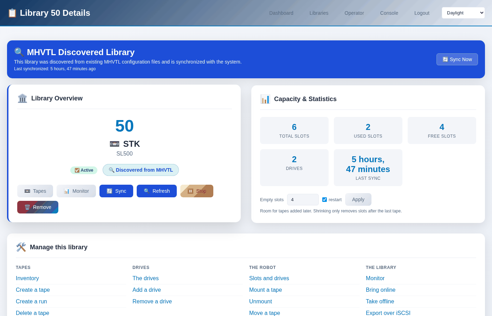
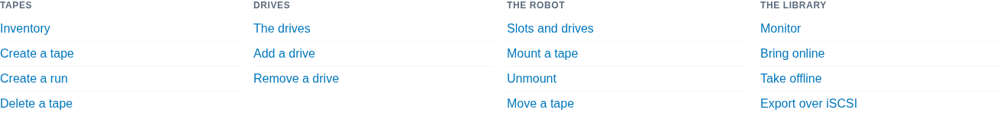
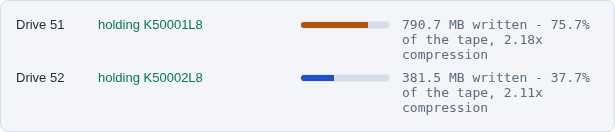

The library page
One library, and everything that can be done to it. If you are working on a library, this is the page to be on.
Open it from Libraries in the header and click a library, or go straight
to /libraries/detail/<id>/.
{kind=link}

What is on it
- Library Overview
What the library is - its id, vendor and model - and the buttons that act on the whole of it: Tapes, Monitor, Sync, Refresh, Stop and Remove.
- Capacity & Statistics
Slots, how many hold a tape, how many are free, how many drives, and when the console last read the configuration. The Empty slots box changes how many spare slots the library has; see Creating tapes.
- Manage this library
Fifteen links, in four groups - Tapes, Drives, The robot, The library. Each one carries the library with it, so the page it opens is already set to this one. This is the hub: you should rarely need to pick the library again once you are here.
{kind=link}

- Tape Drives
What each drive is doing, refreshed every five seconds, then a card per drive with its SCSI address and serial. See Watching a drive while it works.
{kind=link}

- Tapes
A tile per tape, with a bar for how full it is and how much room is left.

- Technical Specifications
The SCSI address, the serial, the NAA, and where MHVTL keeps this library’s files. Useful when something else on the host disagrees with the console.
The same thing from the terminal
There is no single command that prints the whole page, because the page answers four questions. These are them:
$ sudo mhvtl library show 50 # what the library is
$ sudo mhvtl status library 50 # what the robot says is where
$ sudo mhvtl status activity 50 # what each drive is doing now
$ sudo mhvtl tape list 50 # the tapes, with how full they are
library show reads device.conf; status library asks the robot
through mtx; status activity asks the drive daemons directly. When
the first two disagree, the library was changed without being restarted -
the console says so on the page, and mhvtl says so on the command line.
If the page says 404
A library created from the command line exists in device.conf before the
console’s database has heard of it. Opening the page syncs it first, so this
should not happen; if it does, press Sync on the library list, or check
that the library is really there:
$ sudo mhvtl library list
If it is in that list and the page still refuses, the console cannot read
/etc/mhvtl. It runs as the user mhvtl-gui in the group mhvtl;
check that it can read the directory:
$ sudo -u mhvtl-gui ls /etc/mhvtl
If that fails - reinstalling MHVTL can reset the directory’s owner - give it back the group the package set when it was installed:
$ sudo chown -R root:mhvtl /etc/mhvtl
$ sudo chmod 775 /etc/mhvtl
$ sudo chmod 664 /etc/mhvtl/*